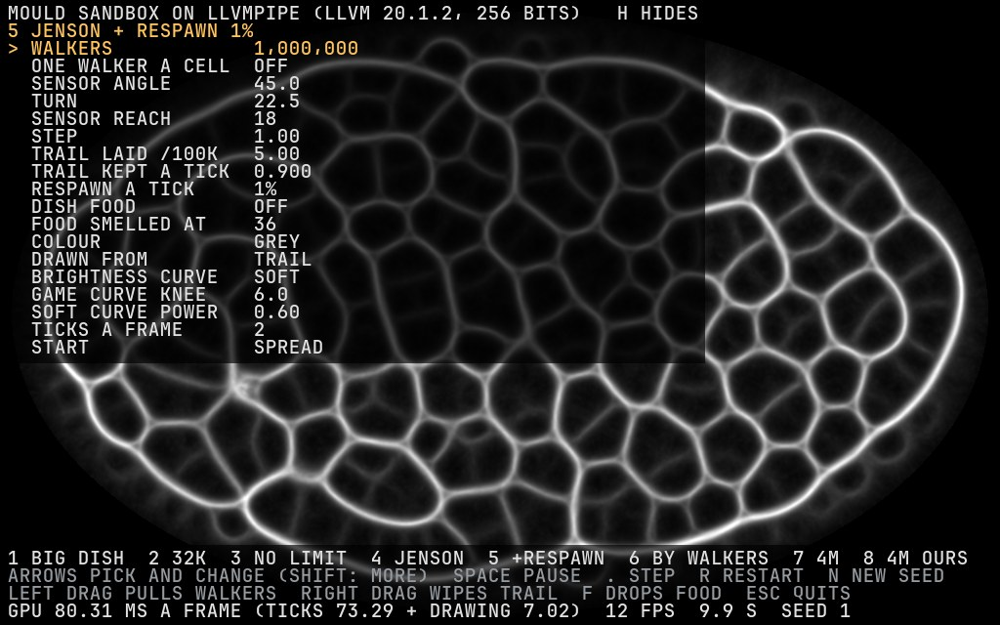

Every option the Jenson comparison tested is now a control you can turn while the dish runs, at up to 8 million walkers. It is open on Scott-Desktop. To start it again, run this in the Slime Mold folder:
It is a toy for looking: the big dish's step with no economy, census or score. Everything on screen is the simulation, apart from the panel, which H hides.
Two fresh reviewers checked the code and every number. Two real gaps were found and fixed. Food piles now go quiet once the mould reaches them, as on the CPU; before, keys 1 and 2 had twice the CPU's strays. Respawned walkers now jump after their step, as on the CPU; before, a quarter of the jumps froze a walker, and key 5's tubes were wider than every CPU seed. Over 8 to 16 seeds, on the cloud's software GPU and on the GTX 1070, no measure now differs from the CPU's after a correction for 20 tests. The videos of keys 1, 2, 5 and 6, their counts and the costs are new. The slow frames in the window were the GPU stepping its clocks down at light load.

The controls: walkers (10,000 to 8 million), one walker a cell, sensor angle, turn, sensor reach, step, trail laid per 100,000 walkers, trail kept a tick, respawn a tick, dish food, how far food is smelled, amber or grey, drawn from the trail or from walkers a cell, the game's brightness curve or a soft one, ticks a frame, and a spread or blob start. Walkers and start restart the dish; everything else changes it as it runs.
Each is a dish from the Jenson comparison or the 4x Mould page, 1024 x 640, seed 1, the first 10 seconds from a spread start, at real speed. The videos were drawn by the sandbox's own code on the cloud's software GPU, after the review's fixes. Counts are at 10 s, with the GTX 1070's own dish in brackets: a seed is a slightly different dish on each GPU, because their sums round differently. The GPU cost is the 1070's GPU time for a frame of two ticks and the drawing.
Measured on Scott-Desktop through Remote Control after the review's fixes (build 9d4a2d1): 600 frames of two ticks and the drawing, each submitted and waited for, as the window does, and each pass timed alone. A 60 Hz frame is 16.7 ms; phase 3's bar is the GPU busy under half of it, 8.3 ms.
| Key | Dish | GPU a frame: ticks + drawing | Before the fixes | Frame on the clock, median / worst | The slowest pass, a tick |
|---|---|---|---|---|---|
| 1 | Big dish, 100,000 | 1.39 + 0.07 ms | 1.23 + 0.07 | 1.58 / 2.18 ms | sense 0.31 ms |
| 2 | 32,000 | 0.82 + 0.07 ms | 0.70 + 0.07 | 1.01 / 1.21 ms | scent 0.16 ms |
| 3 | No limit, 100,000 | 0.91 + 0.06 ms | 0.81 + 0.06 | 1.09 / 1.80 ms | scent 0.16 ms |
| 4 | Jenson settings, 1M | 7.85 + 0.29 ms | 7.69 + 0.18 | 8.24 / 37.7 ms | sense 2.51 ms |
| 5 | + respawn 1% | 9.68 + 0.27 ms | 9.51 + 0.16 | 10.12 / 36.0 ms | sense 3.05 ms |
| 6 | Drawn by walkers | 9.69 + 0.27 ms | 9.52 + 0.16 | 10.12 / 12.6 ms | sense 3.04 ms |
| 7 | 4M walkers | 29.79 + 0.29 ms | 29.82 + 0.18 | 30.11 / 47.2 ms | sense 10.42 ms |
| 8 | 4M, our numbers | 12.57 + 0.28 ms | 12.50 + 0.17 | 12.98 / 47.4 ms | sense 3.72 ms |
Before the review, key 1 read 4.6 ms a frame in the window against 1.4 ms headless. The GPU's clocks were logged through four runs:
| Run | GPU a frame, median of about 300 frames | The GPU's clocks |
|---|---|---|
| Headless, key 1 | 1.39 + 0.07 ms | 1936 MHz, memory 4006 MHz throughout |
| Window, key 1 | 1.80 + 0.08 ms, 58.7 a second | 1594, then 1012, then for the last 2 s 797 MHz with the memory at 810 MHz |
| Window, key 1, 8 ticks a frame | 4.94 + 0.07 ms, 60.5 a second | 1936 MHz throughout |
| Window, key 4 | 7.84 + 0.27 ms, 60.4 a second | 1936 MHz throughout |
At 100,000 walkers the GPU idles nine-tenths of each frame, so its driver steps the clocks down until the memory runs at a fifth of its speed, and the step, which reads memory everywhere, takes about three times as long. The old 4.6 ms was a running average read at the end, in that slow stretch. Given more work, the GPU holds its full clock and the window costs what headless does. So it is the GPU resting, not lost time.
The sandbox's dishes after the fixes against the CPU's own runs of the same dishes, 10 s from a spread start: the range over 8 seeds (16 for the food dish). Each measure is a paired sign test by seed; none differs after a correction for the 20 tests on each GPU. The smallest p is 0.013 (the 1070's food dish, more loops on 12 of 16 seeds), against the 0.0025 needed.
| Dish | Measure | CPU | Software GPU | GTX 1070 |
|---|---|---|---|---|
| 32,000 with food (key 2) | strays | 0.8-1.8% | 0.5-1.4% | 0.8-1.7% |
| width | 3.37-3.45 | 3.38-3.47 | 3.34-3.46 | |
| loops | 86-100 | 88-98 | 92-101 | |
| 100,000, one a cell, no food | loops | 144-160 | 143-156 | 150-161 |
| 100,000, no limit (key 3) | width | 5.52-5.96 | 5.51-6.05 | 5.65-6.14 |
| 1M, Jenson settings (key 4) | loops | 38-52 | 38-48 | 37-51 |
| 1M, respawn 1% (key 5) | width | 7.70-8.01 | 7.83-8.00 | 7.82-8.12 |
| loops | 187-208 | 181-202 | 192-206 |
Before the fixes, key 2 had 3.6% strays and width 3.24 on seed 1, and key 5 had width 8.33, both outside every CPU seed. The check that holds to the bit is the twin test in CI: one GPU tick from a CPU dish's state against one CPU tick, on keys 1, 3, 4 and 5. The same seed gave the same frame twice on every key, on both GPUs.